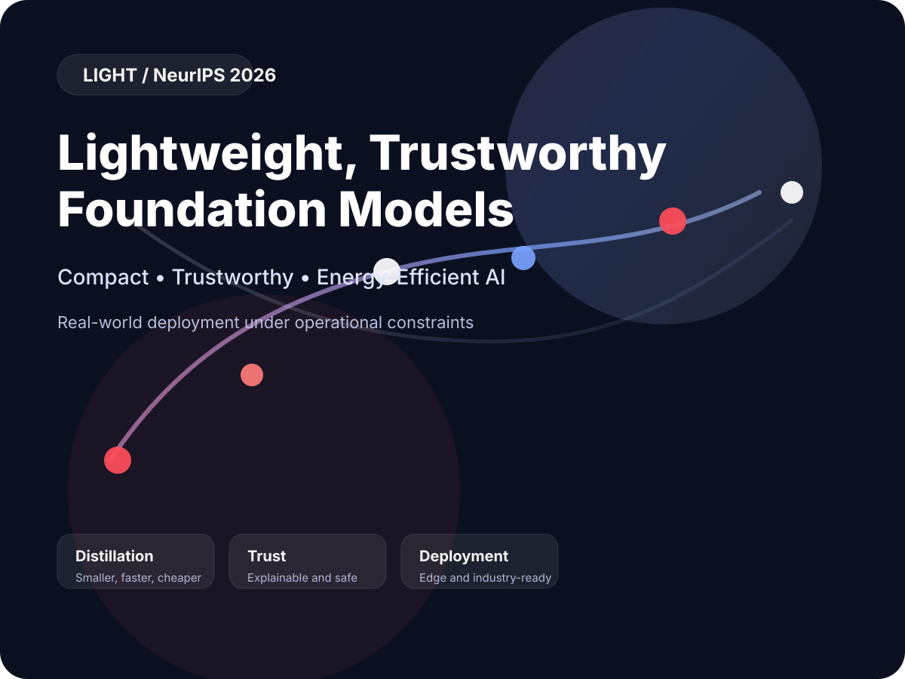

Compact AI for deployment
The workshop addresses the emerging shift from adapting large foundation models to transforming them into deployable AI systems using distillation, compression, quantization and pruning.
NeurIPS Workshop - December 12-13, 2026 (Paris)
Small, trustworthy and energy-efficient models for real-world deployment.
LIGHT focuses on the transition from large foundation models to compact, deployable AI systems
that remain efficient, governable and suitable for industrial and regulated environments.

Workshop motivation and scope
Foundation models have transformed artificial intelligence, but their increasing size has made them costly to train, difficult to deploy, and challenging to operate in industrial, edge, and regulated environments. While fine-tuning remains the dominant paradigm for domain adaptation, it does not address the fundamental issues of computational efficiency, energy consumption, governance, and operational trustworthiness. A new research direction is therefore emerging around lightweight foundation models that combine knowledge distillation, compression, quantization, and pruning with advances in trustworthy AI, neuro-symbolic reasoning, and systems engineering. By bringing together these traditionally separate communities, LIGHT aims to advance the next generation of AI systems that are not only accurate, but also efficient, explainable, robust, governable, and ready for real-world deployment.
The workshop addresses the emerging shift from adapting large foundation models to transforming them into deployable AI systems using distillation, compression, quantization and pruning.
Smaller models create new opportunities for explainability, robustness, compliance and alignment with domain-specific requirements, especially in industrial and regulated environments.
Workshop format
Three sessions covering distillation, trustworthy compact systems and deployment.
A discussion on whether small models can outperform large models in real-world environments.
An extended interactive session for demos, exchange and collaboration.
Submission
Each submission will receive at least three reviews from members of the Program Committee.